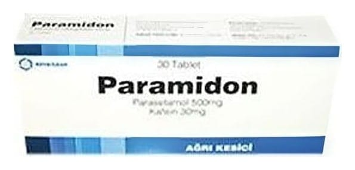

Paramidon Tablet, 30 Adet

Ne için kullanılır
KT · Bölüm 1PARAMİDON, her tabletinde 500 mg parasetamol ve 30 mg kafein içeren, ağrı kesici ve ateş düşürücü olarak etki gösteren bir ilaçtır. PARAMİDON, 20 ve 30 tablet içeren blister ambalajlardadır.
PARAMİDON, hafif ve orta şiddette ağrılar (baş ağrısı, migren, ağrılı adet görme, boğaz ağrısı, kas-iskelet ağrıları, kireçlenmeye bağlı ağrılar) ve ateşin giderilmesinde kullanılır. PARAMİDON, yardımcı madde olarak sığır kaynaklı jelatin içermektedir.